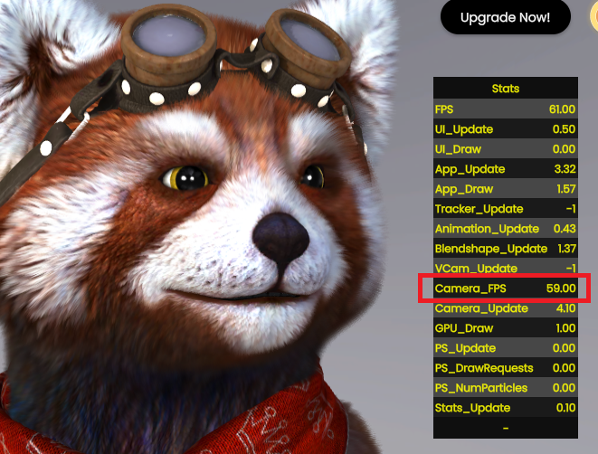
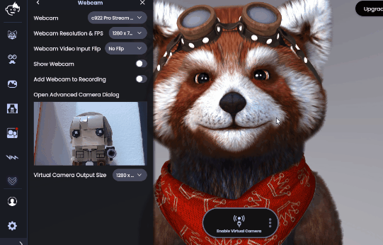

Animaze Desktop: How can you set your webcam at 60FPS from the advanced webcam options?
Setting up your 60 fps tracking is really simple, just follow the steps that follow:
1. Firstly, open the Animaze app
2. Navigate to Settings > Webcam
3. Select from the Webcam Resolution & FPS drop-down list a combo that has 60 FPS

4. Then, while in the Animaze app, press the following combination of keys: Ctrl + Shift + F3. This will prompt the Performance Tracker to start in the top right corner.

5. If your Performance Tracker Camera FPS isn't performing at 60 FPS, you will need to open Camera Dialog from Settings > Webcam. Go to Camera Control Tab and turn off the 'Low Light Compensation' option

If you are having problems with getting 60 FPS while broadcasting with Animaze Virtual camera, take into consideration that the application does not know how to change the FPS dynamically and that you will need to restart the camera in order for the 3rd party app to pick up the FPS from Animaze Virtual Camera.
Example: Use Animaze Virtual Camera with Google Meets In Google Meets Animaze doesn’t seem to run at 60 FPS Close the camera from Google Meets and Stop the Broadcast from Animaze Open the Camera from Google Meets Go to Animaze and start Broadcasting
Happy streaming, folks!